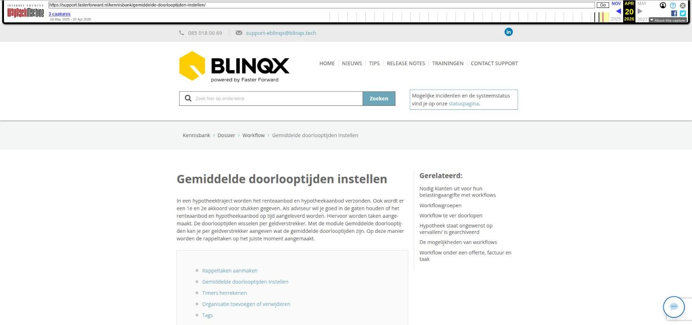

Gemiddelde doorlooptijden instellen

Tekstinhoud
Gemiddelde doorlooptijden instellen
In een hypotheektraject worden het renteaanbod en hypotheekaanbod verzonden. Ook wordt er een 1e en 2e akkoord voor stukken gegeven. Als adviseur wil je goed in de gaten houden of het renteaanbod en hypotheekaanbod op tijd aangeleverd worden. Hiervoor worden taken aangemaakt. De doorlooptijden wisselen per geldverstrekker. Met de module Gemiddelde doorlooptijden kan je per geldverstrekker aangeven wat de gemiddelde doorlooptijden zijn. Op deze manier worden de rappeltaken op het juiste moment aangemaakt.
Rappeltaken aanmaken
Gemiddelde doorlooptijden instellen
Timers herrekenen
Organisatie toevoegen of verwijderen
Tags
Rappeltaken aanmaken
De rappeltaken worden aangemaakt vanuit de workflow. De workflow moet zodanig ingericht zijn dat deze kan reageren op de module Gemiddelde doorlooptijden. Wanneer je gebruik wilt maken van de module Gemiddelde doorlooptijden dan zal de workflow aangepast moeten worden. Wil je hiervan gebruik maken, stuur dan een e-mail naar support-eblinqx@blinqx.tech.
Indien de workflow goed staat ingericht dan zal de taak aangemaakt worden aan de hand van de gemiddelde doorlooptijden die in de module staan ingesteld. De redenatie is als volgt:
De gemiddelde doorlooptijd staat op 3 werkdagen. Op maandag wordt de timer geactiveerd om 14:38 uur. Op dinsdag om 14:38 uur is geen terugkoppeling van de maatschappij, dit is dag 1. Woensdag en donderdag om 14:38 zijn dag 2 en 3. Na deze derde dag, dus donderdag iets na 14:38 uur zal de timer afgegaan en staat er na 14:38 uur voor de medewerker een beltaak klaar. De timers gaan af door middel van een proces. Hierdoor kan de tijd ietwat afwijken.
Gemiddelde doorlooptijden instellen
Voor het instellen van de gemiddelde doorlooptijden ga je naar Beheer – Workflow – Gemiddelde doorlooptijden. Je moet hiervoor wel de juiste rechten hebben.
Standaard wordt de gemiddelde doorlooptijd per kolom op 3 werkdagen gezet. Via het wijzigingsicoon kan je het aantal dagen aanpassen.
Wanneer je een wijziging hebt gedaan, kan je deze vervolgens opslaan door middel van het groene icoontje. Wil je de wijziging toch niet doorvoeren dan klik je op het rode pijltje.
Als je op het wijzigingsicoon hebt geklikt, maar je past geen velden aan dan komt het groene icoon niet zichtbaar. Er komt dan een rood icoon zichtbaar waar je op kan klikken als je niets wilt wijzigen.
Timers herrekenen
Wanneer je een aanpassing hebt gedaan bij een geldverstrekker en deze via het groene icoon hebt opgeslagen dan gaan de timers in de workflow die betrekking hebben op deze geldverstrekker de tijd herrekenen. Stel: de gemiddelde doorlooptijd bij ABN AMRO Hypotheken stond op 3 werkdagen en de timer zou afgaan op 20-03-2023. De doorlooptijd pas je aan naar 4 werkdagen dan zal de timer pas afgaan op 21-03-2023.
Het is ook mogelijk om de gemiddelde doorlooptijd te verlagen van bijvoorbeeld 3 werkdagen naar 2 werkdagen. Dan ligt het moment van afgaan van de timer wellicht in het verleden. De taken worden dan direct aangemaakt op het moment dat het proces heeft gedraaid.
Het scherm wordt geblokkeerd op het moment dat er een herrekening plaatsvindt. Pas wanneer de herrekening heeft plaatsgevonden kan je de doorlooptijden wijzigen bij een andere geldverstrekker.
Organisatie toevoegen of verwijderen
In het overzicht worden alle maatschappijen getoond die in Beheer – Organisatie & Personen – tabblad Detail aangemerkt zijn als maatschappij. Wanneer je een organisatie wilt toevoegen zal deze dus in dit tabblad aangemerkt moeten worden als maatschappij. Het kan zijn dat de geldverstrekker nog niet in Beheer – Organisatie & Personen staat, dan zal deze aangemaakt moeten worden.
Om een geldverstrekker uit de lijst te verwijderen zal je in het tabblad Detail maatschappij moeten uitvinken. Let op: je kan deze maatschappij dan ook niet meer selecteren in de productkaart in een dossier.
Tags
Er zijn diverse tags beschikbaar die informatie ophalen uit deze module. Zo kan je eenvoudig vanuit het klantdossier voor de betreffende maatschappij zien wat de doorlooptijd is en wanneer en door wie deze is aangepast.
Laatste update: 15 oktober 2025
Was deze informatie nuttig?
Ja Nee